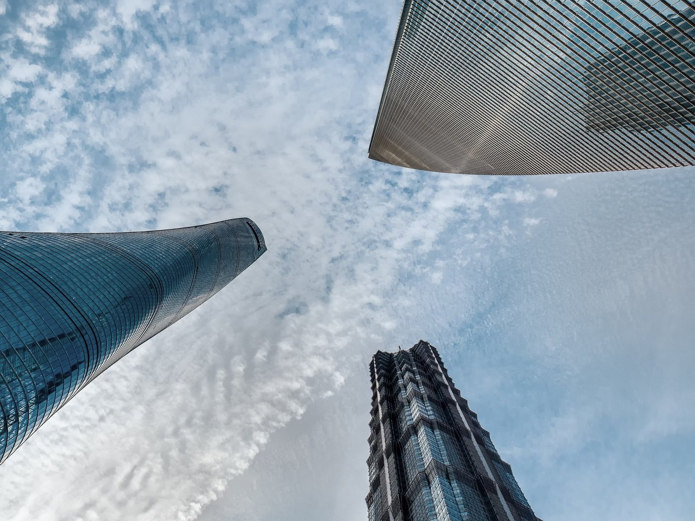
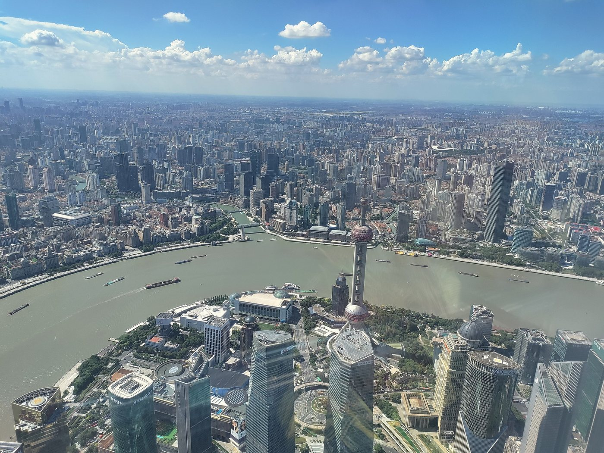
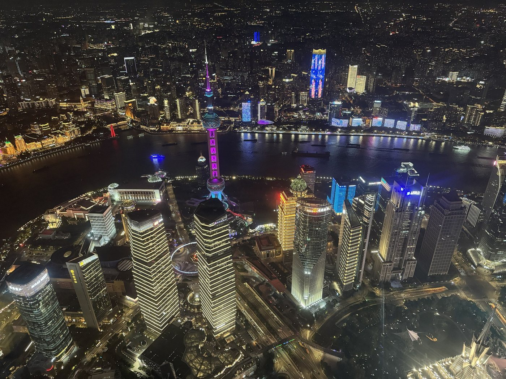

Shanghai Tower observatory, 'Top of Shanghai' (118th floor) 上海中心大厦 上海之巅观光厅（118层）
Observation deck · Pudong
CheckedHours/price unofficial


The 118th-floor deck costs CNY 180 on a timed passport ticket. Fog spoils it, so watch the forecast.
Why it matters
At 632 m it is the tallest building in China: topped out in 2013, finished in 2014-15, with the observatory open since 2017. It stands across the river from the 1920s Bund, so the deck shows both Shanghais at once. About 1.75 million people visited in 2025, over 30% from abroad.
What to see
A 360-degree view: the Bund, the Jin Mao and World Financial Center towers below you, the river bend and the old city, and far beyond on a clear day. The B1 exhibition covers the Huangpu River and Suzhou Creek.
How to get there
Follow signs to the Shanghai Tower ticket hall; show your passport and e-ticket QR code at security. Lockers are on B2 (about CNY 3 an hour, 2026 guide).
Local tip
The sunset slot sells out first; weekend walk-up queues can reach about 2 hours (one guide). Do not plan around the World Financial Center decks: no 2026 reopening found.
Watch out
The passport name must match the ticket exactly. Thick fog or cloud makes the deck pointless, so watch the forecast. Weekend queues. The official tower sites could not be read, so hours rest on Trip.com and a reseller.
Did you know
Shanghai Tower, 632 m and 128 floors, twists 120 degrees from bottom to top. By designer Gensler's own figure the twist cuts wind loads by about 24% versus a rectangular tower, saving about US$58 million in materials.
From the Bund, look for the spiral of the outer glass skin and the V-shaped notch (strake) sliding up one side.
Caveat and sources
24% and US$58 million are Gensler's own figures. Lifts set a record 20.5 m/s (since beaten) only with a technician; normal rides run at 18 m/s. Do not call the 118th-floor deck (546 m) 'the highest in China': Shenzhen's Ping An Free Sky deck is 541 m above ground but 547.6 m by Guinness's measure, so the title depends on how you measure. Adult CNY 180 and 08:30-22:00 are third-party; one 2026 guide says tickets are real-name, so show your passport.
- Architectural Record, 2015architecturalrecord.com Opens in a new tab
- Building Design + Construction, 2017bdcnetwork.com Opens in a new tab
- The Paper (observatory, 10 millionth visitor), 2026m.thepaper.cn Opens in a new tab
- Wander in China (Shanghai Tower guide), 2026wanderinchina.com Opens in a new tab
What was checked, and what was not
Read by 16 Nov 2026
Confirmed as operating: 10 millionth visitor on 9 Feb 2026 and 1.75 million visits in 2025 (The Paper), a peak crowd on 1 Oct 2026. Price and passport rule match several independent pages.
Not checked
No official page for hours or last admission (the official sites return no text). Hours and CNY 180 rest on Trip.com (labelled 2025), a reseller and a 2026 guide; the foreigner entry rule is not official.
Sources
- The Paper, 10 millionth visitor (9 Feb 2026)m.thepaper.cn Opens in a new tab
- Trip.com, Shanghai Tower guideau.trip.com Opens in a new tab
- Wander in China, Shanghai Tower guide (2026)wanderinchina.com Opens in a new tab
- Shanghai government, real-name ticket notice (Jun 2024)shanghai.gov.cn Opens in a new tab